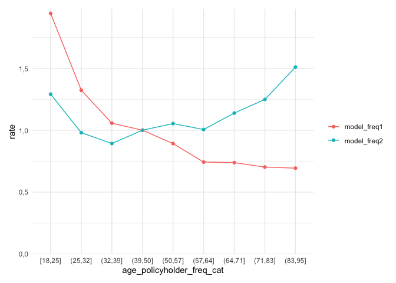
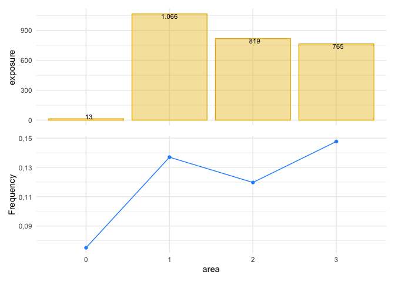
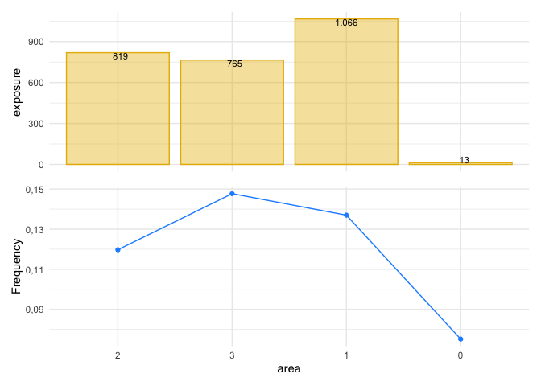
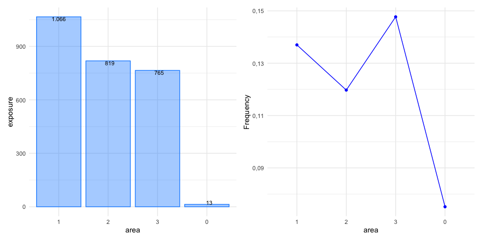

The goal of insurancerating is to give analytic techniques that can be used in insurance rating. It helps actuaries to implement GLMs within all relevent steps needed to construct a risk premium from raw data. It provides a data driven strategy for the construction of tariff classes in P\&C insurance. The goal is to bin the continuous factors such that categorical risk factors result which capture the effect of the covariate on the response in an accurate way, while being easy to use in a generalized linear model (GLM).
insurancerating also provides recipes on how to easily perform univariate analyses on an insurance portfolio. In addition it adds functionality to include reference categories in the levels of the coefficients in the output of a generalized linear regression analysis.
Installation
Install insurancerating from CRAN:
install.packages("insurancerating")
Or the development version from GitHub:
# install.packages("remotes") remotes::install_github("MHaringa/insurancerating")
Example 1
This is a basic example which shows the techniques provided in insurancerating.
The first part shows how to fit a GAM for the variable age_policyholder in the MTPL dataset:
library(insurancerating) # Claim frequency age_policyholder_frequency <- fit_gam(data = MTPL, nclaims = nclaims, x = age_policyholder, exposure = exposure) # Claim severity age_policyholder_severity <- fit_gam(data = MTPL, nclaims = nclaims, x = age_policyholder, exposure = exposure, amount = amount, model = "severity")
Create plot:
autoplot(age_policyholder_frequency, show_observations = TRUE)

Determine classes for the claim frequency (the points show the ratio between the observed number of claims and exposure for each age):
clusters_freq <- construct_tariff_classes(age_policyholder_frequency) clusters_sev <- construct_tariff_classes(age_policyholder_severity) autoplot(clusters_freq, show_observations = TRUE)

The figure shows that younger policyholders have a higher risk profile. The fitted GAM is lower than might be expected from the observed claim frequency for policyholders of age 19. This is because there are very few young policyholders of age 19 present in the portfolio.
The GAM for the claim severity :
age_policyholder_severity %>% autoplot(., show_observations = TRUE, remove_outliers = 100000)

The second part adds the constructed tariff classes for the variable age_policyholder to the dataset, and sets the base level of the factor age_policyholder to the level with the largest exposure. In this example for claim frequency the class for ages (39,50], which contains the largest exposure.
library(dplyr) dat <- MTPL %>% mutate(age_policyholder_freq_cat = clusters_freq$tariff_classes) %>% mutate_if(is.character, as.factor) %>% mutate_if(is.factor, list(~biggest_reference(., exposure))) glimpse(dat)
## Observations: 32,731
## Variables: 5
## $ age_policyholder <int> 43, 21, 54, 44, 20, 38, 68, 45, 76, 30, 28,…
## $ nclaims <int> 0, 0, 0, 1, 1, 0, 0, 1, 0, 0, 0, 0, 0, 0, 0…
## $ exposure <dbl> 1.0000000, 1.0000000, 1.0000000, 1.0000000,…
## $ amount <dbl> 0, 0, 0, 57540, 2057, 0, 0, 6510, 0, 0, 0, …
## $ age_policyholder_freq_cat <fct> "(39,50]", "[18,25]", "(50,57]", "(39,50]",…The last part is to fit a generalized linear model. rating_factors() prints the output including the reference group.
model_freq1 <- glm(nclaims ~ age_policyholder_freq_cat, offset = log(exposure), family = "poisson", data = dat) model_freq2 <- glm(nclaims ~ age_policyholder_freq_cat + age_policyholder, offset = log(exposure), family = "poisson", data = dat) x <- rating_factors(model_freq1, model_freq2) x
## risk_factor level est_model_freq1 est_model_freq2
## 1 (Intercept) (Intercept) 0.1368181 0.3210287
## 2 age_policyholder_freq_cat (39,50] 1.0000000 1.0000000
## 3 age_policyholder_freq_cat [18,25] 1.9438228 1.2909603
## 4 age_policyholder_freq_cat (25,32] 1.3234995 0.9802830
## 5 age_policyholder_freq_cat (32,39] 1.0568538 0.8923472
## 6 age_policyholder_freq_cat (50,57] 0.8919696 1.0535866
## 7 age_policyholder_freq_cat (57,64] 0.7423998 1.0056607
## 8 age_policyholder_freq_cat (64,71] 0.7379362 1.1383509
## 9 age_policyholder_freq_cat (71,83] 0.7021348 1.2486752
## 10 age_policyholder_freq_cat (83,95] 0.6933378 1.5100830
## 11 age_policyholder age_policyholder NA 0.9811935autoplot.riskfactor() creates a figure. The base level of the factor age_policyholder_freq_cat is the group with the largest exposure and is shown first.
autoplot(x)

Include model_data to sort the clustering in the original order. Ordering the factor age_policyholder_freq_cat only works when biggest_reference() is used to set the base level of the factor to the level with the largest exposure.
rating_factors(model_freq1, model_freq2, model_data = dat) %>% autoplot()

The following graph includes the exposure as a bar graph and shows some more options:
rating_factors(model_freq1, model_freq2, model_data = dat, exposure = exposure) %>% autoplot(., linetype = TRUE, color_bg = "skyblue")

Example 2
This is a basic example which shows how to easily perform an univariate analysis on a MTPL portfolio using insurancerating.
An univariate analysis consists in the evaluation of overall claim frequency, severity and risk premium. Its main purpose lies in verifying the experience data reasonableness using previous experience comparison and professional judgement.
univariate() shows the basic risk indicators split by the levels of the discrete risk factor:
library(insurancerating) univariate(MTPL2, x = area, # discrete risk factor nclaims = nclaims, # number of claims exposure = exposure, premium = premium, severity = amount) # loss
## area amount nclaims exposure premium frequency average_severity
## 1 2 4063270 98 818.53973 51896 0.11972540 41461.94
## 2 3 7945311 113 764.99178 49337 0.14771401 70312.49
## 3 1 6896187 146 1065.74795 65753 0.13699299 47234.16
## 4 0 6922 1 13.30685 902 0.07514927 6922.00
## risk_premium loss_ratio average_premium
## 1 4964.0474 78.296400 63.40071
## 2 10386.1390 161.041632 64.49350
## 3 6470.7486 104.880188 61.69658
## 4 520.1832 7.674058 67.78464The following indicators are calculated:
- frequency (i.e. frequency = number of claims / expsore)
- average_severity (i.e. average severity = severity / number of claims)
- risk_premium (i.e. risk premium = severity / exposure = frequency x average severity)
- loss_ratio (i.e. loss ratio = severity / premium)
- average_premium (i.e. average premium = premium / exposure)
The term risk premium is used here as an equivalent of pure premium and burning cost.
univariate() ignores missing input arguments, for instance only the claim frequency is calculated when premium and severity are unknown:
univariate(MTPL2, x = area, nclaims = nclaims, exposure = exposure)
## area nclaims exposure frequency
## 1 2 98 818.53973 0.11972540
## 2 3 113 764.99178 0.14771401
## 3 1 146 1065.74795 0.13699299
## 4 0 1 13.30685 0.07514927However, the above table is small and easy to understand, the same information might be presented more effectively with a graph, as shown below.
univariate(MTPL2, x = area, nclaims = nclaims, exposure = exposure) %>% autoplot(.)

In autoplot.univariate(), show_plots defines the plots to show and also the order of the plots. The following plots are available:
- frequency
- average_severity
- risk_premium
- loss_ratio
- average_premium
- exposure
- severity
- nclaims
- premium
For example, to show the exposure and claim frequency plots:
univariate(MTPL2, x = area, nclaims = nclaims, exposure = exposure) %>% autoplot(., show_plots = c(6,1))

To remove the bars from the plot with the line graph, add background = FALSE:
univariate(MTPL2, x = area, nclaims = nclaims, exposure = exposure) %>% autoplot(., show_plots = c(6,1), background = FALSE)

sort orders the levels of the risk factor into descending order by exposure:
univariate(MTPL2, x = area, nclaims = nclaims, exposure = exposure) %>% autoplot(., show_plots = c(6,1), background = FALSE, sort = TRUE)

sort_manual in autoplot.univariate() can be used to sort the levels of the discrete risk factor into your own ordering. This makes sense when the levels of the risk factor has a natural order, or when not all levels of the risk factor are desired in the output.
univariate(MTPL2, x = area, nclaims = nclaims, exposure = exposure) %>% autoplot(., show_plots = c(6,1), background = FALSE, sort_manual = c("2", "3", "1", "0"))

The following graph shows some more options:
univariate(MTPL2, x = area, nclaims = nclaims, exposure = exposure) %>% autoplot(., show_plots = c(6,1), background = FALSE, sort = TRUE, ncol = 2, color_bg = "dodgerblue", color = "blue")

Or create a bar graph for the number of claims:
univariate(MTPL2, x = area, nclaims = nclaims) %>% autoplot(., coord_flip = TRUE, sort = TRUE)